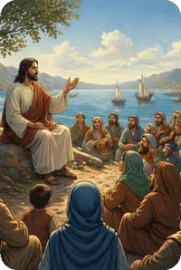
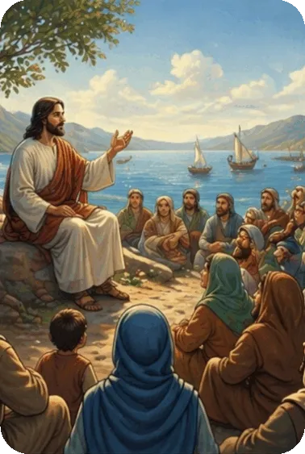
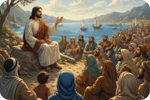

This gospel is unique because it emphasizes Jesus’ actions more than His teaching. It is simply written, moving quickly from one episode in the life of Christ to another. It does not begin with a genealogy as in Matthew, because Gentiles would not be interested in His lineage. After the introduction of Jesus at His baptism, Jesus began His public ministry in Galilee and called the first four of His twelve disciples. What follows is the record of Jesus’ life, death and resurrection.
Mark’s account is not just a collection of stories, but a narrative written to reveal that Jesus is the Messiah, not only for the Jews, but for the Gentiles as well. In a dynamic profession, the disciples, led by Peter, acknowledged their faith in Him (Mark 8 : 29 – 30), even though they failed to understand fully His Messiahship until after His resurrection.
As we follow His journeys through Galilee, the surrounding areas, and then to Judea, we realize what a rapid pace He set. He touched the lives of many people, but He left an indelible mark on His disciples. At the transfiguration (Mark 9 : 1 – 9), He gave three of them a preview of His future return in power and glory, and again it was revealed to them who He was.
However, in the days leading to His final trip to Jerusalem, we see them bewildered, fearful and doubting. At Jesus’ arrest, He stood alone after they fled. In the following hours of the mock trials, Jesus boldly proclaimed that He is the Christ, the Son of the Blessed One, and that He would be triumphant at His return (Mark 14 : 61 – 62). The climactic events surrounding the crucifixion, death, burial and resurrection were not witnessed by most of His disciples. But several faithful women did witness His passion. After the Sabbath, early in the morning of the first day of the week, they went to the tomb with burial spices. When they saw the stone had been rolled away, they entered the tomb. It was not the body of Jesus they saw, but an angel robed in white. The joyful message they received was, “He is risen!” Women were the first evangelists, as they spread the good news of His resurrection. This same message has been broadcast throughout the world in the following centuries down to us today.
Summary of the Book of Mark from GotQuestions.org — is a popular Christian website and "parachurch" ministry that provides answers to a vast array of questions about the Bible, theology, and spiritual life.
Do you have a question? Submit your Bible Questions to GotQuestions.org No need to sign up, just use your email to receive notifications from any answers. Also browse their website for many questions that may answer your questions.
For personal questions, always pray first to God and seek answers through deep prayers. That may answer deep questions in your heart, and mind, as only God, Holy Spirit and Jesus can see through and through on your feelings, thoughts and situation, better than any man can.